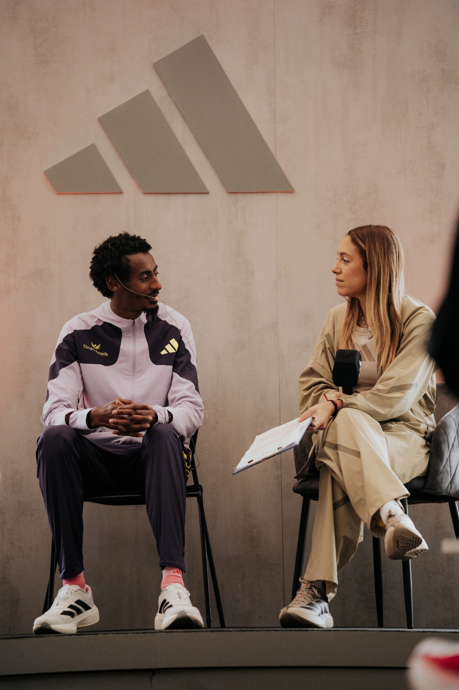
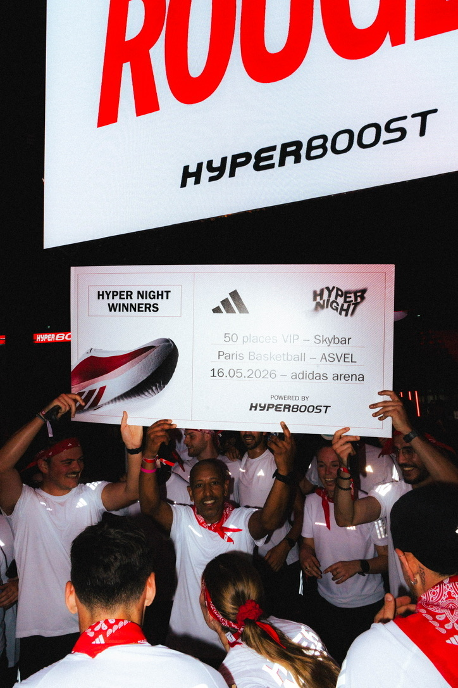
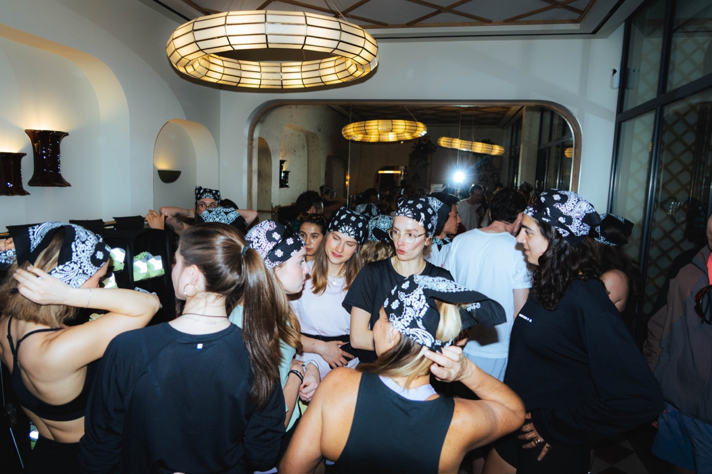
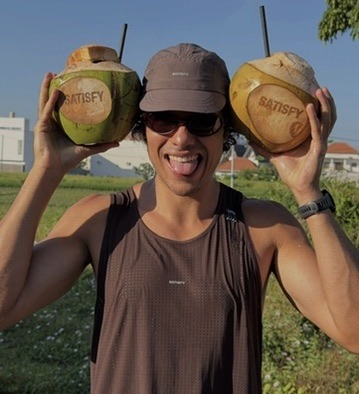

A creative studio rooted in running culture.
Based in Paris. We develop concepts, bring the right people together and produce experiences and content for brands and agencies.
Selected work
Race weeks, launches and community runs, made from inside the running scene.
- adidas Buenos Aires Half MarathonRace week content and community, from the build-up to race day.

- adidas Hyper NightContent from a team night at the adidas Arena for the Paris launch of Hyperboost.

- Maurten × New Balance Paris Marathon Shakeout RunA shakeout run and community gathering ahead of the Paris Marathon, with Maurten and New Balance.

How we work with brands and agencies.
Every project starts with the brief: we shape the idea, the format and the right partners, then deliver it from start to finish.
Content creation
Creator-led content made from inside the running scene. We cover launches, races and events on the ground and turn them into reels, photos and stories that feel native to running culture.
Examples: ReelsPhoto coverageInstagram storiesRace week coverage
Community events
We host and run events that bring runners together around a brand, from shakeout runs to product launches, with the venue, the format and the people taken care of.
Examples: Shakeout runsProduct launchesGroup runsPop-ups
Community & casting
We identify and bring together the run clubs, runners and creators who fit the brief and can give the project a credible place in the running scene.
Examples: Run clubsCreator selectionTalent coordination

Built from inside the running scene.
Saiigo is a Paris-based runner and creator who co-founded and helped build RunLifestyle, a media platform at the intersection of running, fashion and culture.
He now leads Saiigo Studio independently, developing concepts and bringing together clubs, creators and production partners for each brief. From Paris, the studio works with local and international teams looking to develop projects in Europe.
Tell us about your brief.
Tell us what you’re working on, where it’s happening and what kind of support you’re looking for.
Email Saiigo Studio